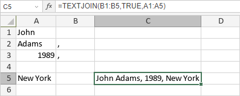

TEXTJOIN Funkcija
TEXTJOIN funkcija je jedna od tekstualnih i podataka funkcija. Koristi se za spajanje teksta iz više opsega i/ili nizova, i uključuje razdelnik koji navedete između svake tekstualne vrednosti koja se spaja; ako je razdelnik prazan tekst, funkcija efektivno samo spaja opsege. Ova funkcija je slična CONCAT funkciji, ali se razlikuje po tome što CONCAT ne prihvata razdelnik.
Sintaksa
TEXTJOIN(delimiter, ignore_empty, text1, [text2], ...)
TEXTJOIN funkcija ima sledeće argumente:
| Argument | Opis |
|---|---|
| delimiter | Razdelnik koji se ubacuje između tekstualnih vrednosti. Može se navesti kao tekstualni niz u dvostrukim navodnicima (npr. "," (zarez), " " (razmak), "\" (backslash) itd.) ili kao referenca na ćeliju ili opseg ćelija. |
| ignore_empty | Logička vrednost koja određuje da li se prazne ćelije ignorišu. Ako je postavljena na TRUE, prazne ćelije se preskaču. |
| text1/2/n | Do 253 podatkovne vrednosti. Svaka vrednost može biti tekstualni niz ili referenca na opseg ćelija. |
Napomene
Kako primeniti TEXTJOIN funkciju.
Primeri
Slika ispod prikazuje rezultat koji vraća TEXTJOIN funkcija.
